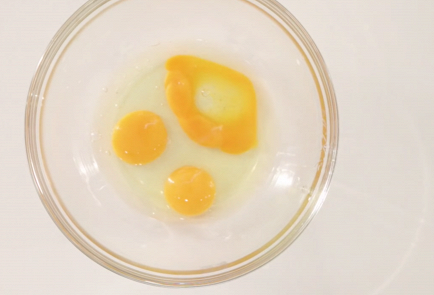
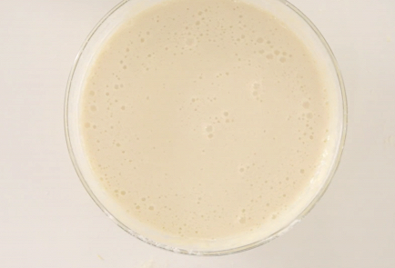
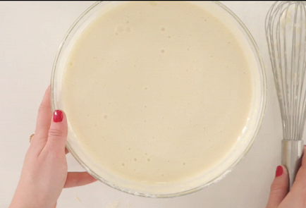
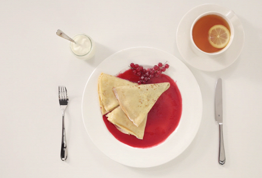

Тонкие блины на молоке — это английский вариант традиционных пышных русских блинов, выпеченных на дрожжах. В Европе блинчики имеют вид тонких, почти прозрачных салфеток. Во Франции их называют «крепы» и подают с сотней разнообразных начинок. Никаких особых уловок в приготовлении нет: чем более жидкое тесто, тем тоньше получается блинчики. Ажурный вариант, в дырочку, получится, если часть молока из рецепта добавить в тесто немного горячим. Перед тем как залить первый блин, следует хорошо прокалить сковороду. Блинчик готов, когда он начинает зарумяниваться до хрустящих краев.
ИНГРEДИЕНТЫ:
-
Пшеничная мука400 г
-
Сахар2 столовые ложки
-
Яйцо куриное4 штуки
-
Молоко1 л
-
Сольна кончике ножа
-
Растительное масло2 столовые ложки
ИНСТРУКЦИЯ ПРИГОТОВЛЕНИЯ:
-
1. Взбейте яйца с сахаром.
-
2. Постепенно введите муку и соль, чередуя с молоком и аккуратно размешайте до однородной массы.
-
3. Оставьте на 20 минут.
-
4. Добавьте в тесто растительное масло и жарьте блины на сильно разогретой сковороде.